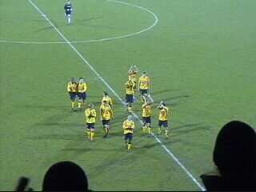

| Roda JC - FC Utrecht (1-0) 20 december 2002 |
Onze mede-koempel en Hanebretboy Ray heeft
een vrij ernstig ongeval gehad. De RML'ers en
alle anderen die Ray kennen wensen hem veel
beterschap! Come back soon koempel!
De choreografie van de West-side.
Utrecht kwam eindelijk met een redelijk aantal
supporters (ca. 300).
De enige bikkelaar bij Roda: Gerrie Senden!
Roda wordt een penalty onthouden door Bosschen.
Party-time.....
Soetaers kan op Sonko plaatsen.
De welke scoort: 1-0 (39').

Kuyt heeft een kwetsuur aan het hoofd opgelopen.
In de pauze ontmoeten we Pat en Melleke van
KV Mechelen.
Once a ballenjongen, always a ballenjongen.....
Filipovic en Tanghe.
Superkans voor Sonko die vakkundig verprutst
wordt.
Nog een superkans.
Wapenaar redt fantastisch!
Roorda hoeft niet vaak in actie te komen, maar
hier behoedt hij Roda voor de gelijkmaker.

Okay, thanx!
Mechelensupporters bij de RFH.
Succes! Hopelijk komt alles goed!!!!
BF in de Kik.
Helden....altijd erbij!

Schaesberg!
Schaesberg!
Schaesberg 2.